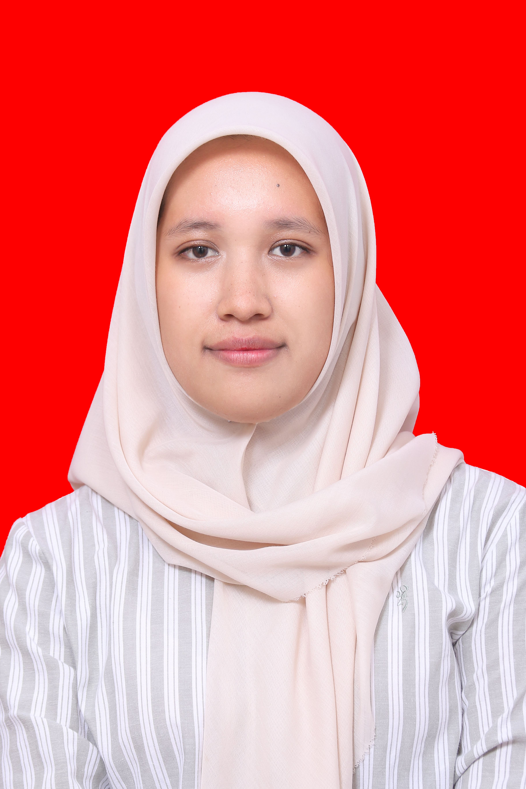

Hi, I'm Fahrisya
Intan Aldiani.
Information Systems Student
Tech & Creative Enthusiast who loves exploring creativity through design, technology, and digital experiences.
GET TO KNOW
About Me.

Fahrisya.
Saya adalah mahasiswa Program Studi Sistem Informasi di Universitas Kuningan yang memiliki ketertarikan pada bidang UI/UX Design, Video Editing, dan Graphic Design.
Saya senang menjelajahi hal-hal baru, terutama di bidang UI/UX Design, Graphic Design, and Video Editing. Saya percaya bahwa kreativitas dan teknologi dapat bersatu untuk menciptakan pengalaman digital yang menarik dan bermanfaat.
I am always excited to learn, grow, and turn ideas into something creative and valuable.
MY ACADEMIC JOURNEY
Education.
Every step is part of the journey that shapes who I am today.
SD Negeri 1 Cileuleuy
MTs Negeri 3 Kuningan
SMA Negeri 3 Kuningan
Universitas Kuningan
Information Systems
CURRENTLY STUDYINGWHAT I CAN DO
My Skills.
A combination of creativity, visual storytelling, and digital design.
UI/UX Design
Merancang pengalaman digital yang intuitif, user-friendly, dan menarik melalui desain antarmuka dan pengalaman pengguna.
DESIGN & EXPERIENCEGraphic Design
Membuat desain visual yang kreatif, tata letak, dan konten digital yang dapat menyampaikan ide secara efektif.
VISUAL CREATIVITYVideo Editing
Mengubah raw footage menjadi video yang menarik melalui editing, transitions, and storytelling.
VIDEO & STORYTELLINGGET IN TOUCH
Let's create
something great.
Have a project, collaboration, atau hanya ingin menyapa? Jangan ragu untuk menghubungi saya. Saya senang bisa berinteraksi dengan Anda!
Contact Me ↗